フィルムスキャナ考察 ： ネガフィルムの取り込み
Home > Software > ソフトウエア開発・サーバ管理のメモ帳 > このページ
Created on 2002/04, Last Update 2004/10/15
| 概要 スキャナドライバの設定 スキャン実例（晴天日） スキャン実例（曇天日・建物内） 手動でネガ反転処理 |
注意：このページは最終更新が2002年04月で、現在では利用できない情報の可能性があります。
曇天の景色取り込み（都市風景）
香港の彌敦道（ネイザン・ロード）です。曇天の昼間です。リバーサル フィルムなら紫外線で青かぶりがひどいはずですが、これはネガなのでそれほどでもないです。
ここでは、vuescan の 24bit (R=8, G=8, B=8) と 48bit (R=16, G=16, B=16) の読み取りモードがどう違うか比べてみます。なお、Dimage Scan Dual II は 36bit (R=12, G=12, B=12) のはずなので、 24bitのときはデータが圧縮され切り捨てられて、48bitのときは無駄に引き伸ばされてというところでしょうか。
まず、フィルムのスキャンと同時に作成したTIFFと、保存されているRAWファイルを読み込んで作成したTIFFで出力結果が違うのが不思議です。私の設定ミスなのか、設定できないパラメーターが存在しているのかはわかりません。
24bit のときは、RAW再読み込みでは緑がかった画像になります。
48bit のとき、RAW再読み込みでは少し赤みがまします。
24bit でも 48bit でも スキャンと同時に保存されたTIFFは結果が同じように見えます。
これは推測でしかないですが、スキャンと同時にTIFF化するときは、内部データ（おそらく36bit）で処理しているためTIFF化の結果が同じとなり、RAWを書き出す段階で24bit, 48bit にコンバートされるときの補完・切捨てで微妙な色合い（TIFF化の時のWhiteBalanceに影響を与える因子）の変化が起こるんじゃないでしょうか。
サービス版のプリントをフラットベッド・スキャナで読み取った結果と比べると、スキャンと同時にTIFF化したものが一番近いように感じます。
曇天の感じを出すには、フィルムスキャナの結果がいいし、単にスナップ写真としてみたいだけならサービス版のプリントがいいとも思います。
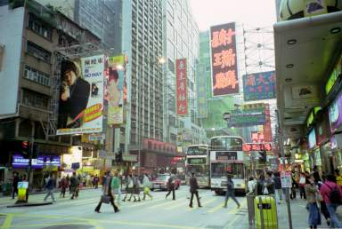
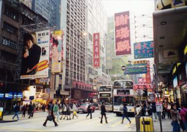
左：Dimage Scan Dual II 純正TWAINドライバ（スキャン毎AF, sRGB）
右：サービス版プリントをフラットベッド・スキャナでスキャン
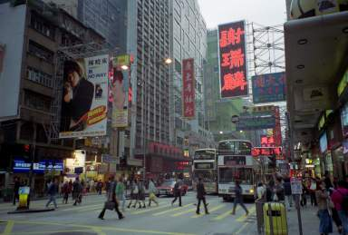
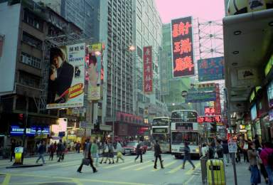
左：vuescan（スキャン同時保存TIFF, 24bit, BlackPoint=3, WhitePoint=0.4, Bright=0.6, Kodak Gold 400G1, sRGB）
右：vuescan（RAWを再読み込み, 24bit, BlackPoint=3, WhitePoint=0.4, Bright=0.6, Kodak Gold 400G1, sRGB）
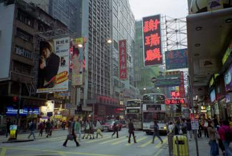
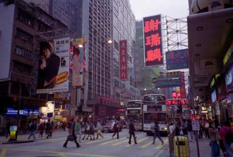
左：vuescan（スキャン同時保存TIFF, 48bit, BlackPoint=3, WhitePoint=0.4, Bright=0.6, Kodak Gold 400G1, sRGB）
右：vuescan（RAWを再読み込み, 48bit, BlackPoint=3, WhitePoint=0.4, Bright=0.6, Kodak Gold 400G1, sRGB）
曇天の景色取り込み（自然風景）
ノルウェーのソグネ フィヨルドです。曇天と言うより、小雨です。
上の香港の景色と同じく、スキャンと同時のTIFFとRAWを読み込んでTIFF変換したものの比較もしています。結果としては、ほとんど違いが無いようです。
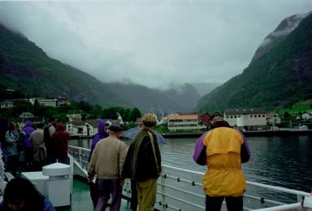
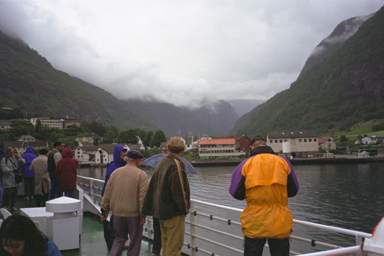
左：Dimage Scan Dual II 純正TWAINドライバ（スキャン毎AF, sRGB）
右：PhotoCD (Photoshopで読み込み。Negativeモード)
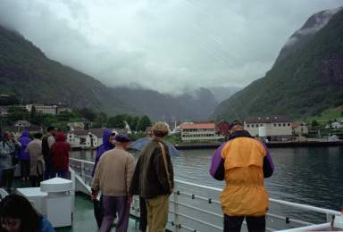
左：vuescan（スキャン同時保存TIFF, 48bit, BlackPoint=3, WhitePoint=0.4, Bright=0.6, Kodak Gold 400G1, sRGB）
右：vuescan（RAWを再読み込み, 48bit, BlackPoint=3, WhitePoint=0.4, Bright=0.6, Kodak Gold 400G1, sRGB）
晴天日の景色取り込み（砂漠・乾燥地帯）
エジプトのアブ・シンベル神殿です。かんかん照りの昼間です。
デジカメで撮影した写真が、現実の色に近いと「思い」ますが、なんともいえません。さて、どんな色だったんでしょうかね。
左：Dimage Scan Dual II 純正TWAINドライバ（スキャン毎AF, sRGB）
右：デジタルカメラ FinePix 2500Z で撮影
左：vuescan（スキャン同時保存TIFF, 48bit, BlackPoint=3, WhitePoint=0.4, Bright=0.6, Kodak Gold 400G1,
sRGB,
ColorBalance=White Balance）
右：vuescan（RAWを再読み込み, 48bit, BlackPoint=3, WhitePoint=0.4, Bright=0.6, Kodak Gold 400G1,
sRGB,
ColorBalance=Auto Balance）
夜間照明の室内
夜のパリ北駅のコンコースです。様々な種類の照明で照らされています。
PhotoCDは あまりにも黄色くしすぎな気がします。それに、左端のほうに見えている「何番線かの行き先案内」の色は、黄色ではなく、黄緑色というのが欧州の多くの駅での標準色だったと記憶してます。
つまり、この室内の景色ではPhotoCDはうその色と言うことになるかもしれません。
純正TWAINドライバは、コントラスト上げすぎです。vuescanは、少し明るめに設定してちょうどいいくらいでしょうか。WhiteBalanceよりFluorescent のほうがうまい具合にカラーマッチングしているように思います。
クローズアップで分かるとおり、解像度はPhotoCDが優れています。（ただ、左側の広告を見ると、明るすぎると言う欠点もあるようです）
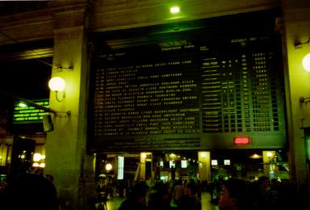
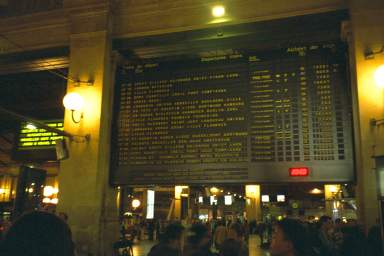
左：Dimage Scan Dual II 純正TWAINドライバ（スキャン毎AF, sRGB）
右：PhotoCD (Photoshopで読み込み。Negativeモード)
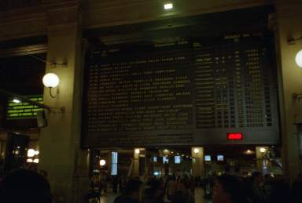
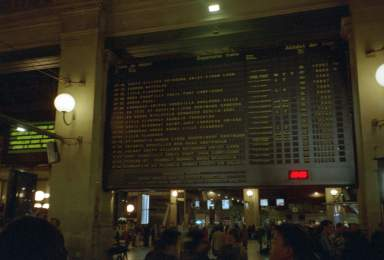
左：vuescan（スキャン同時保存TIFF, 48bit, BlackPoint=3, WhitePoint=0.4, Bright=0.6, Kodak Gold 400G1, sRGB,
ColorBalance=White Balance）
右：vuescan（スキャン同時保存TIFF, 48bit, BlackPoint=3, WhitePoint=0.4, Bright=0.7, Kodak Gold 400G1, sRGB,
ColorBalance=White Balance）
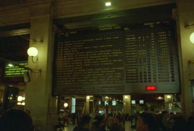
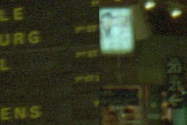
左：vuescan（スキャン同時保存TIFF, 48bit, BlackPoint=3, WhitePoint=0.4, Bright=0.7, Kodak Gold 400G1, sRGB,
ColorBalance=Fluorescent）
右：部分拡大
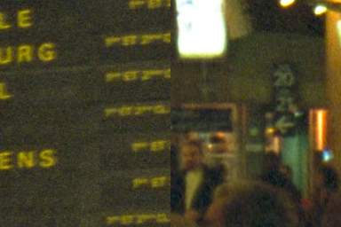
左：PhotoCD (Photoshopで読み込み。Negativeモード)
右：部分拡大